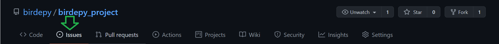
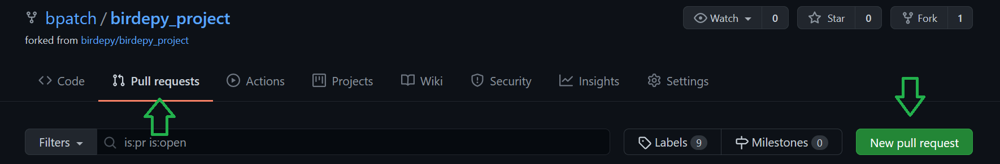

Bug Reports and Contributing
The BirDePy source code is stored at github.com/birdepy/birdepy_project .
To report a bug use the Issues tab on our Github repository.
In order to contribute we recommend following these steps:
Fork the birdepy_project repository.
Clone the forked repo to your local machine by opening the folder where you would like to store the code and running:
git clone https://github.com/<your_username>/birdepy_project
Make the desired changes.
Push your changes to your fork with an appropriate comment:
git add . git commit -m "write a comment here" git push
Open a pull request:

We strongly prefer that each pull request focuses on a single aspect of the code.